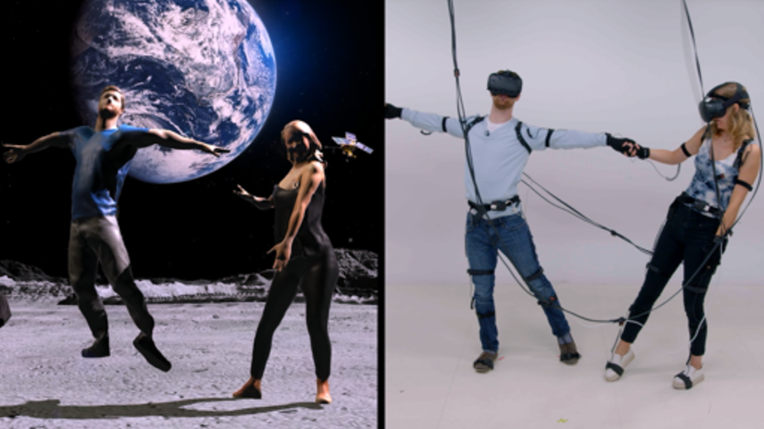
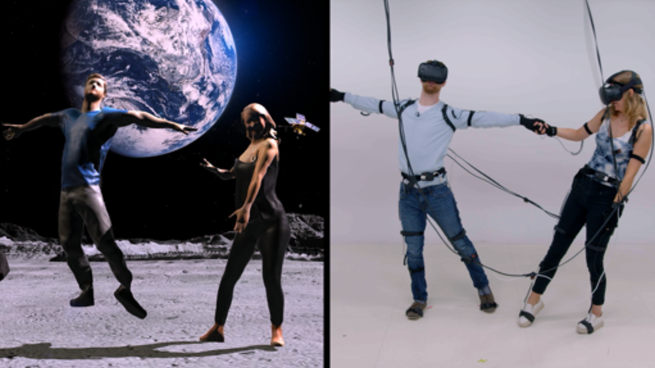

Selected Projects
- All //
- Experiential //
- Exhibit //
- Art //
- VR & AR //
- Retail //
- Prototype //
Nate is a creative technologist, technical director, and digital artist based in NYC
He specializes in creating custom hardware and software systems for interactive audio visual installations, digital event activations, and live performance. He holds a Bachelor of Science in Electrical and Computer Engineering from The University of Colorado.
He is interested primarily in the ways art and technology influence each other, how culture is created and spread, and the power of sublime moments of total immersion
He creates work on with OpenFrameworks, Cinder, Unity3D, TouchDesigner, Max/MSP, among others and thrives on learning new techniques and tools.
Nate is currently a full time member of NEW INC, the New Museum's Cultural Incubator creating work with SUPERBRIGHT, and accepting freelance inquiries.


 
